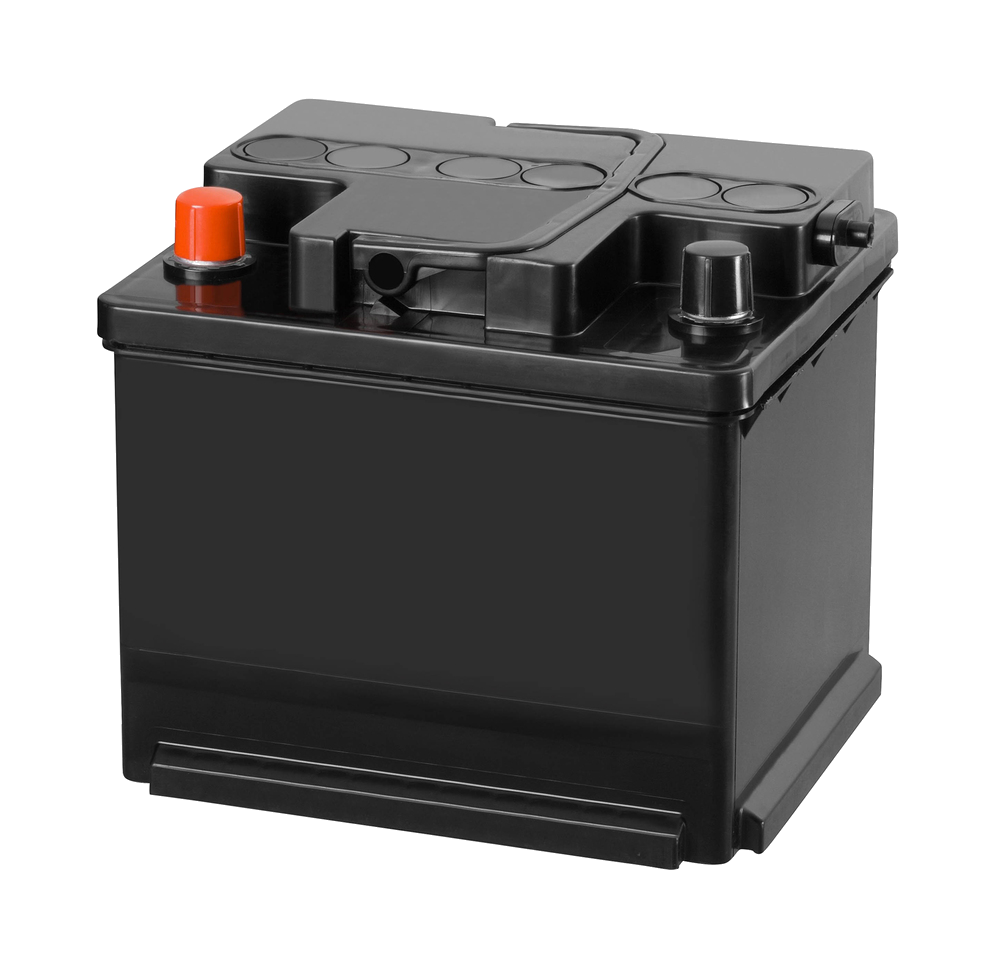
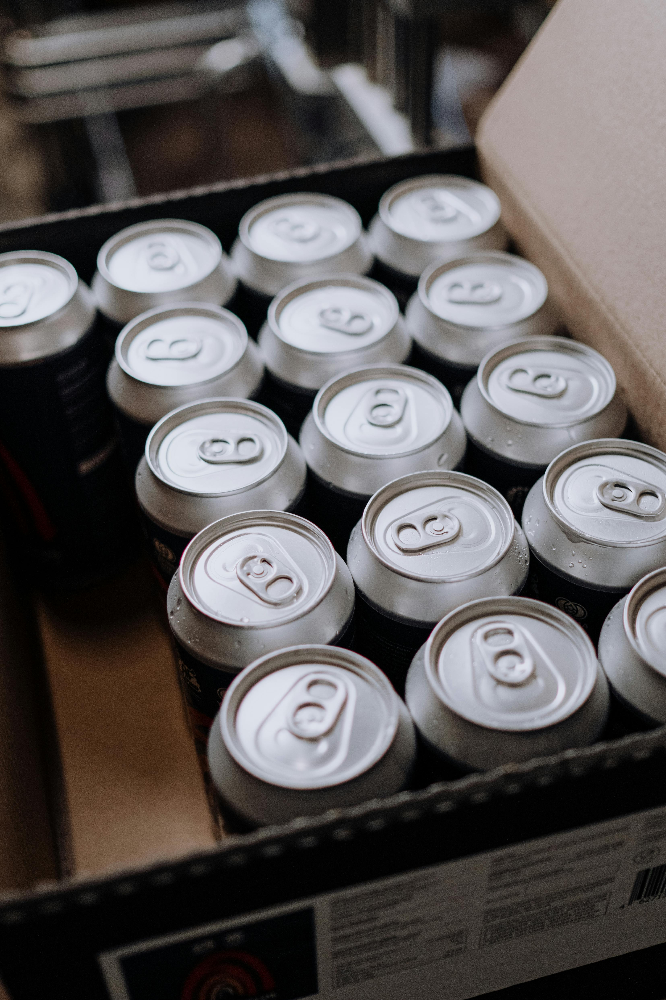
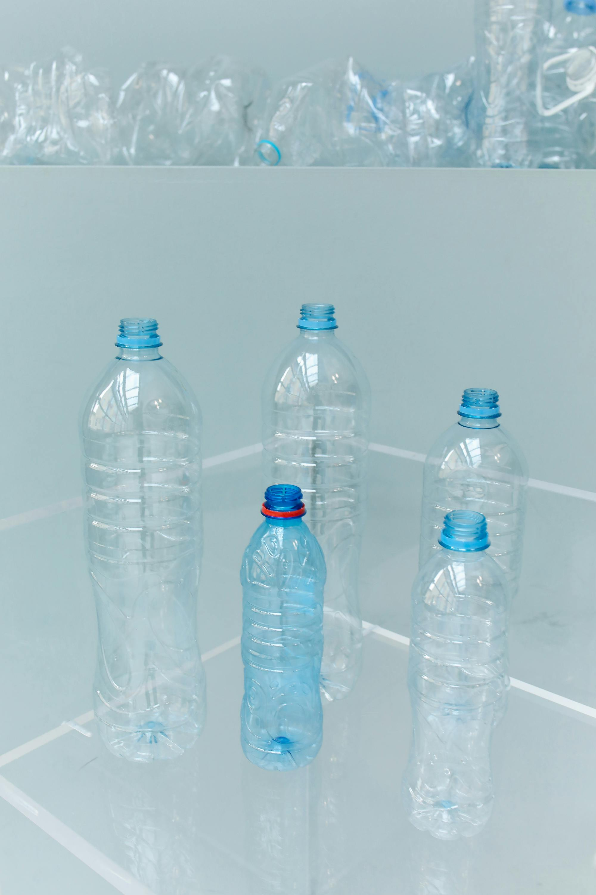
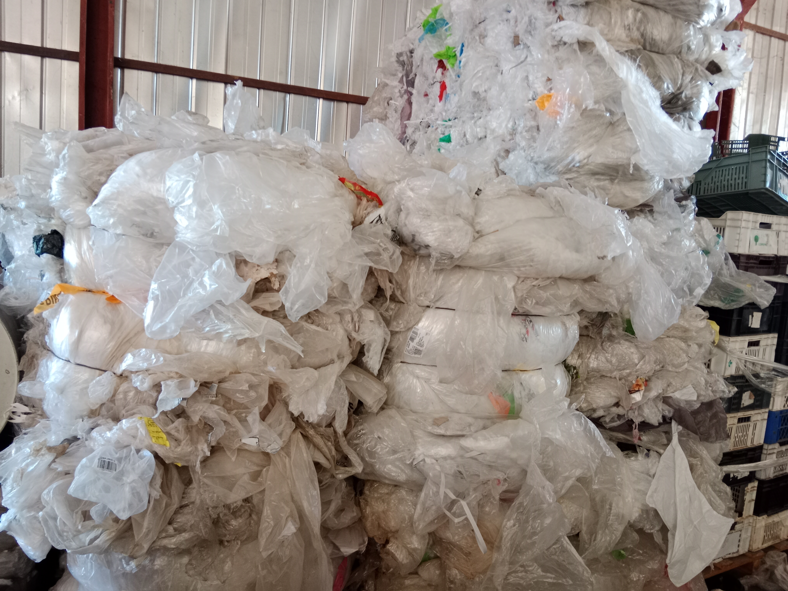
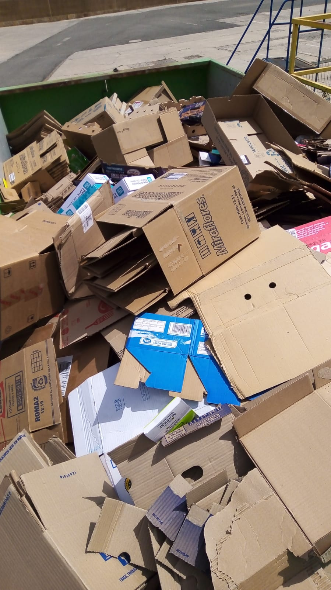
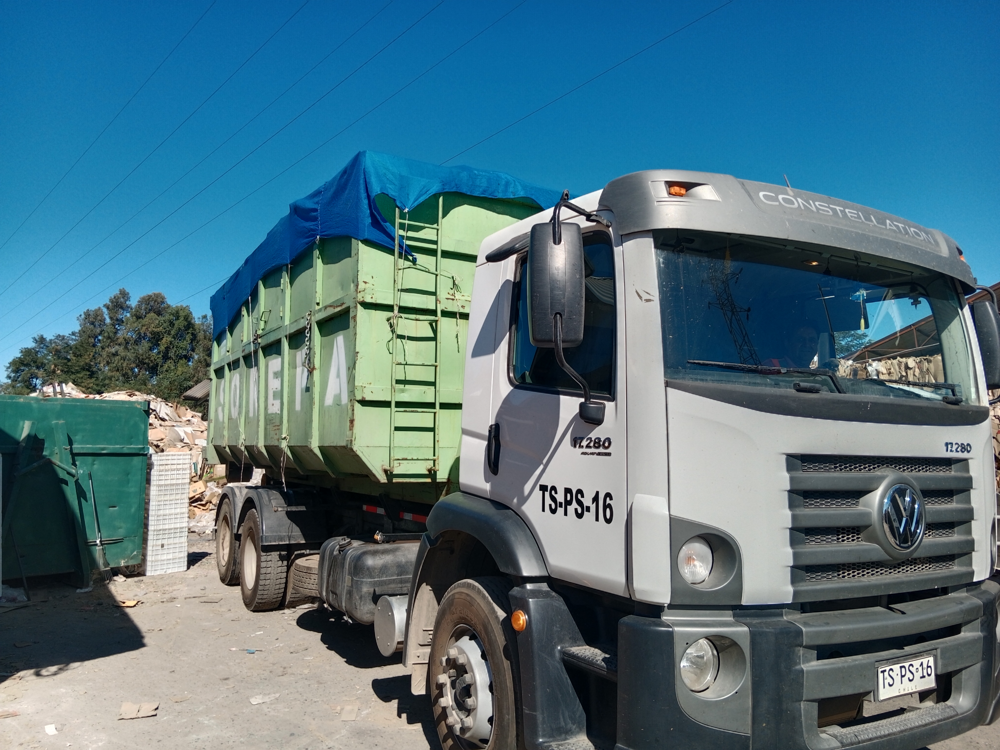
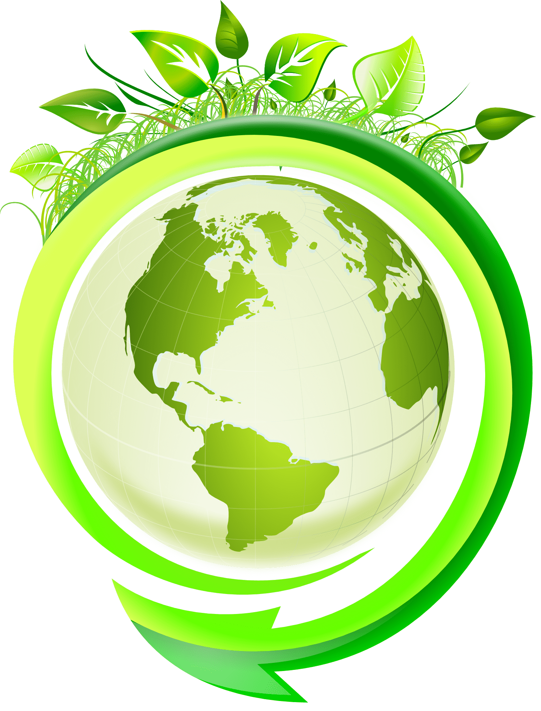

Sobre Nosotros
Reciclajes Tudela es una empresa con más de 20 años de trayectoria en el rubro del reciclaje, fundada por Don Pedro Tudela Ramírez. Desde nuestros inicios hemos trabajado con compromiso y responsabilidad, consolidándonos como un referente en la Sexta Región en la gestión de residuos.
Colaboramos estrechamente con empresas líderes a nivel nacional, cadenas de supermercados, packings agrícolas y particulares en comunas como San Fernando, Rengo, Las Cabras, San Vicente, Santa Cruz, Pichilemu y Chimbarongo. Nuestro objetivo es ofrecer soluciones eficientes y sostenibles que contribuyan al cuidado del medio ambiente y al desarrollo de la economía circular.
Cada mes reciclamos aproximadamente 300 toneladas de cartón, lo que equivale a salvar cerca de árboles. Además, gestionamos el reciclaje de otros materiales. Estos esfuerzos permiten reducir la contaminación, fomentar la reutilización de estos y evitar la tala indiscriminada de bosques.
Nuestra misión es promover prácticas responsables de reciclaje que generen un impacto positivo en la comunidad y en el planeta. Nuestra visión es ser líderes regionales en innovación y sustentabilidad, ofreciendo servicios confiables y adaptados a las necesidades de cada cliente.
En Reciclajes Tudela creemos en la importancia de la educación ambiental y el compromiso social. Por ello, trabajamos día a día para crear conciencia sobre la relevancia del reciclaje y construir un futuro más limpio y sostenible para las próximas generaciones.
Lo que Reciclamos
Recibimos y compramos materiales reciclables de manera responsable.
Nuestro compromiso es facilitar la correcta gestión de residuos, asegurando que cada elemento sea procesado y enviado a las plantas correspondientes para su transformación en nuevos insumos productivos.
Con transparencia y seriedad, trabajamos para que cada material tenga el destino adecuado, contribuyendo al cuidado del medioambiente y a la cadena de producción sustentable.
♻️ Materiales que recibimos o adquirimos incluyen:

Cartón
Dato curioso
Reciclar una tonelada de cartón ahorra 17 árboles y 26.000 litros de agua.

Fierro y Chatarra
Dato curioso
El acero puede reciclarse infinitas veces sin perder calidad, ahorrando hasta 74% de energía.

Vidrio
Dato curioso
El vidrio es 100% reciclable y puede reutilizarse infinitamente sin perder calidad.

Papel Blanco
Dato curioso
El papel puede reciclarse hasta 7 veces; cada tonelada evita la tala de 15 árboles.

Baterías
Dato curioso
Una sola batería mal desechada puede contaminar 600.000 litros de agua.

Latas de Aluminio
Dato curioso
Una lata reciclada puede volver al estante en 60 días, ahorrando 95% de energía.

Botellas PET
Dato curioso
Reciclar 1 tonelada de PET ahorra 7,4 m³ de espacio en vertederos y 1,5 toneladas de CO₂.

Plástico Nylon
Dato curioso
El nylon reciclado reduce hasta 50% las emisiones de gases de efecto invernadero.
Galería





